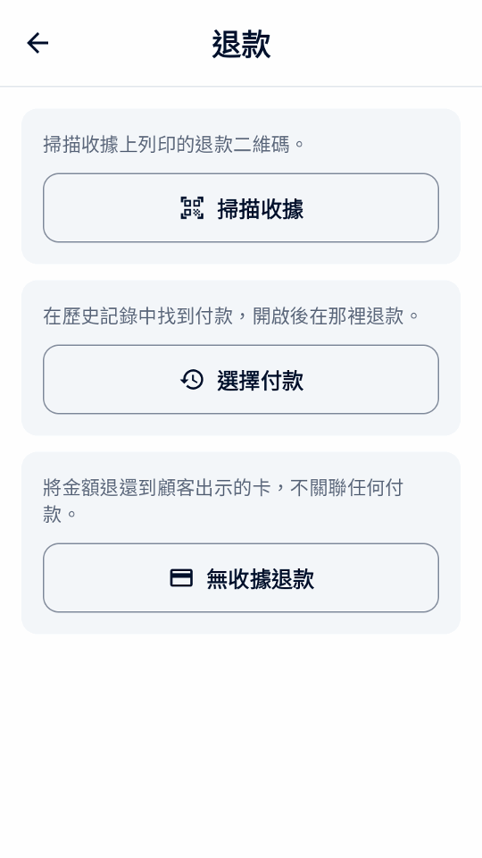
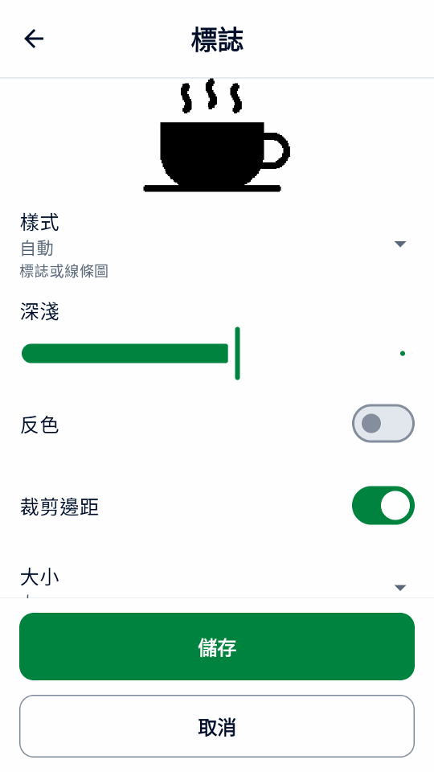
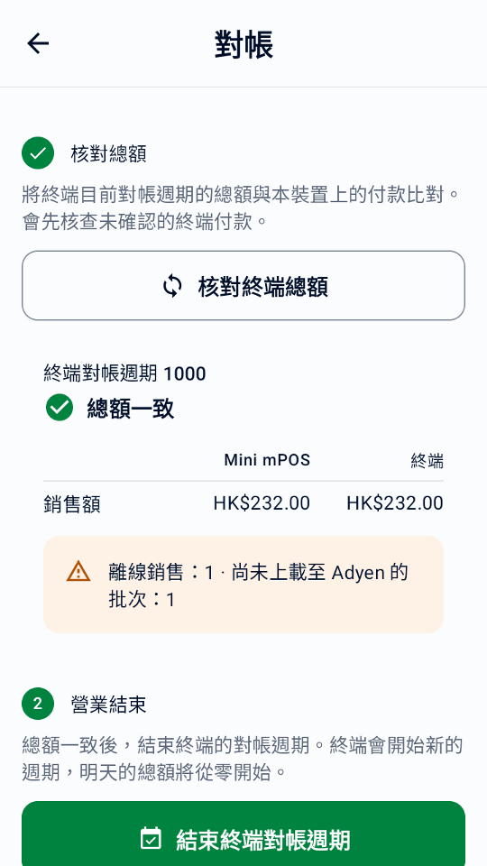

指南
使用 Mini mPOS
完成商戶營運設定、收款、提供收據並進行日結。需要時再加入選用付款功能。
商戶營運設定
準備商品、稅費和員工權限
設定貨幣和稅費
- 在設定 › 支付中選擇商戶帳戶接受實體店付款的貨幣。
- 在設定 › 稅中檢查稅率、價格含稅還是結帳時加稅，以及新商品的預設稅率。
設定完成後，“設定 › 支付”可能會建議使用 Adyen 顯示的商戶帳戶主要結算貨幣。這只是建議，並不代表已確認該帳戶接受此貨幣的付款。選擇後會開啟相同的價格檢查；保留目前貨幣則不會更改任何內容。
每個商品都有稅率，不徵稅的商品使用 0% 稅率。關閉收取稅費會停止徵稅，但保留稅率。
重要
更改貨幣會保留價格中的數值，不會按匯率換算。更改後請檢查商品價格。
新增商品
- 打開設定 › 商品，點按 +。
- 輸入名稱、價格和稅率。可選新增分類和條碼（輸入或掃描）。
- 訂金商品請開啟預授權商品，使其只出現在預授權中。
設定員工 PIN
在設定 › 安全中點按設定 PIN，以管理員 PIN 保護設定和商品，並選擇多久後再次鎖定。 點按設定經理 PIN保護受保護的操作；管理員 PIN 無法批准這些操作。之後可使用更改管理員 PIN或 移除管理員 PIN。
在經理權限中選擇哪些操作需要經理 PIN。相似的操作共用一個開關；有參考退款、無收據退款和現金退款 各有獨立開關。本指南中的經理批准均依照這些選擇。
未設定管理員 PIN 時，所有操作都開放。設定管理員 PIN 後，受保護的操作會被封鎖，直至設定經理 PIN。刪除管理員 PIN 亦會刪除經理 PIN，但會保留權限選擇。多次輸錯 PIN 會暫時鎖定輸入。
服務顧客
銀行卡收款
- 在首頁點按新建銷售。點按商品、點按掃描條碼，或新增自訂商品。
- 點按收款。核對商品、稅費和總計，並填寫參考編號或電郵欄位。
- 點按支付。終端（或 Tap to Pay 的 Adyen Payments 應用程式）會提示顧客付款。
- 等待結果。結果顯示前請勿開始另一筆付款。
- 通過列印收據、發送電子收據或分享收據向顧客提供收據（已自動發送時除外）。
說明
視乎終端和商戶帳戶，顧客可插卡或拍卡，亦可用手機或手錶感應付款。使用 Tap to Pay 時，Adyen Payments 應用程式會引導顧客。
警告
結果未知不表示付款失敗。再次收款前，請查詢原付款。
顧客參考編號和儲存卡均為可選；請參閱參考編號和已儲存的卡。如需分單或收取現金、 禮品卡或餐券，請參閱可選結帳流程。如需讓顧客在自己的手機上付款，請使用 付款連結。如果付款被拒絕，請參閱被拒絕的付款。
退款或撤銷付款
- 退款
- 適用於已扣款的付款，退還全部或部分金額。
- 撤銷（取消）
- 適用於尚未扣款的凍結付款：訂金點按取消預授權，待填寫小費 的銷售點按取消支付。這會釋放凍結金額。
退款步驟：
- 在首頁點按退款，然後點按掃描收據掃描收據上的退款二維碼，或點按選擇付款在交易紀錄中開啟原銷售。
- 選擇全額、指定金額或按商品退款。按商品退款要求本設備保留原銷售。
- 確認退款，如有提示則輸入經理 PIN。


這些退款關聯原付款。已支付的付款連結請在商戶後台退款。
拆分的銷售會退回到原來的各筆付款。Mini mPOS 會建議每張卡退回多少、需要退還多少現金；點按某筆付款 即可調整。系統先逐張退回銀行卡，再退現金，退現金需要經理 PIN。如果某張卡的退款未被接受，則不會繼續退款； 請開啟該銷售查看剩餘金額。
對於已報告附加費的銷售，退款依次退回購買金額、小費和附加費；全額退款 包括剩餘的附加費。
無收據退款
僅在沒有可退款的付款時（例如無收據退貨）才使用無收據退款。它會把金額退到顧客出示的卡上， 且不連結任何付款，因此 Mini mPOS 無法核實實際付款。錯誤或重複退款由您承擔責任。
請 Adyen 為店舖啟用無參考退款，並在商戶後台設定 Adyen 的退款上限。然後在「設定」›「支付」中開啟 允許無收據退款，設定您自己的退款上限和經理 PIN。Adyen 在部分國家/地區以及 掃碼錢包上不允許此類退款；Mini mPOS 會檢查 Adyen 為終端驗證的店舖。
點按無收據退款，輸入金額，選擇原因，確認並以經理 PIN 批准；然後由顧客出示卡。 退款已批准表示收單機構已即時批准；已請求退款表示 Adyen 已收到請求。交易紀錄、 收據和每日報告會分開列出這些退款；請手動對帳。
如果 Adyen 支援團隊設定了退款延遲，請開啟已設定退款延遲。在延遲期間開啟該退款並點按 取消退款，然後在商戶後台查看退款是否已停止。
Adyen: Unreferenced refunds · Adyen: Cancel an unreferenced refund
重要
已請求退款表示 Adyen 已收到請求，不表示顧客已收到款項。請在商戶後台確認最終結果。退款結果未知時， 重試前請先查詢。
列印、發送電子收據或分享收據
在付款結果或交易紀錄中點按列印收據或發送電子收據。平板和手機還可點按分享收據，通過 Android 分享選單發送圖片。列印需要配有打印機的終端。
自訂並測試收據
- 在設定 › 收據中填寫商戶資訊、抬頭和頁尾。也可點按從 Adyen 匯入商戶資訊，檢視 Adyen 提供的資料。選擇 補充缺漏資料保留現有文字，或選擇取代現有資料使用取得的商戶名稱、地址及電話。匯入的空白欄位保留原值，稅務編號、標題及頁尾不變。
- 選擇自動列印、何時列印商戶副本，以及是否顯示退款二維碼。
- 點按列印測試收據並檢查列印效果。螢幕預覽無法顯示打印機的確切排版。
其他選項：
- 顯示稅額
- 顯示總額中包含或另行加收的稅額，不改變實際收取的稅額。
- 顯示稅額明細
- 按稅率列出稅額。價格含稅時，顯示所含稅額需要開啟此項。
- 按稅率顯示應稅金額
- 按稅率彙總商品金額，包括 0%。
- 顯示參考編號
- 預設開啟。列印商戶參考編號及已輸入的顧客參考編號，便於將收據與付款對應。
- 標記的稅率（%）
- 用商品標記及其說明標出該稅率的商品。留空則不標記。
- 每行字元寬度
- 預設為 32，適用於較窄的收據紙捲。請通過測試列印選擇適合打印機的寬度。
在設定 › 收據 › 標誌中選擇 PNG、JPEG 或 WebP 圖片。如果裝置沒有檔案選擇器，可透過 設定助手單獨傳送標誌，或與其他設定一併傳送。查看黑白預覽：樣式可選 自動、標誌或相片，並可用深淺、反色和裁剪邊界微調。選擇大或小的大小後儲存。如果標誌已包含 商戶名稱，請關閉列印商戶名稱。
標誌會顯示在列印、電郵和分享的收據上，包括重新列印的收據。如需調整，請重新選擇原始圖片；使用「移除標誌」 可將其清除。


設定語言
應用程式支援英文、簡體中文、繁體中文、日文、巴西葡萄牙文、西班牙文和法文。設定 › 語言 會即時更改本裝置上的應用程式文字和收據標籤；已儲存的商戶文字和商品名稱保持不變。跟隨裝置使用 Android 為應用程式設定的語言。Adyen 的銀行卡收據行依照終端的收據語言。
設定電子收據
允許出站存取您的 SMTP 伺服器，通常為 TCP 587（STARTTLS）或 465（SSL/TLS）。
- 打開設定 › 電郵收據。選擇服務商，或填寫 SMTP 伺服器、連接埠、寄件人和登入資訊。使用 STARTTLS 或 SSL/TLS。
- 發送測試郵件。
- 在同一螢幕上選擇何時詢問顧客電郵，以及是否自動發送收據。
請按服務商說明開通 SMTP 並取得正確的密碼：
收據無法列印或發送時，請參閱打印機和郵件問題。
日結
查詢付款並完成每日對帳
交易紀錄按日列出付款和退款，並顯示每日總計。
每頁最多顯示七個曆日內的 100 條紀錄；使用上一步和下一步翻頁。搜尋範圍 涵蓋所有保留的交易。
- 按銷售、待填寫小費、預授權、退款或需處理篩選，並用付款方式篩選卡品牌或錢包。
- 可按參考編號、授權碼、顧客參考編號或電郵、卡號後四位、品牌、錢包或確切金額搜尋。每個詞都需相符：
visa 34可查找金額為 34 的 Visa 付款。
螢幕上的總計受搜尋和篩選影響。凍結的付款（如訂金和收據小費）在扣款被受理當日計入銷售。
每日對帳
- 打開交易紀錄，篩選需處理並逐一處理；參見結果未知。
- 檢查待填寫小費和預授權篩選。錄入小費，並在凍結到期前為訂金扣款或取消。
- 點按日期旁的列印圖示，列印本地每日摘要。
- 與商戶後台中的 Adyen 報告對帳；參見 Adyen 結算對帳指南 。
摘要忽略篩選，涵蓋整日的銷售、已含小費、已受理退款、淨額、新增凍結和未解決操作，按貨幣分列。TEST 和模擬器活動會標明。已支付的付款連結和日期未知的扣款會作為無日期活動單獨列出。
重要
本地每日摘要只包含本設備儲存的付款，不是 Adyen 的最終結算，也不包含其他設備。以商戶後台為準。
警告
在 LIVE、TEST 和模擬器之間切換會永久刪除本設備上的所有交易紀錄和報告資料。存在未完成付款時，應用程式會再次警告：Adyen 上的任何操作都不會被取消，但本地恢復和安全重試資料將遺失。商品和設定保留。
核對終端總額並結束週期
- 在主頁點按對帳，然後點按核對終端總額。Mini mPOS 會先核查待處理或結果未知的終端付款，然後並排顯示 Mini mPOS 與終端的銷售額及退款。
- 如果顯示總額不一致 ，請在交易紀錄中處理需要關注的付款後再次核對。終端對帳週期不一定等於一個曆日；其他設備使用同一終端或本地紀錄缺失都可能導致差異。付款連結、代碼扣款和示例紀錄不屬於終端付款。
- 營業結束時，點按結束終端對帳週期並確認，在要求時完成經理批准。終端會結束目前的週期並開始新的週期；此操作無法還原。
- 如有需要，點按列印今日報表列印本地每日摘要。
Tap to Pay 不支援此功能。總額一致或週期已結束並不代表已結算、退款已完成或離線交易已上載；最終結果以商戶後台 為準。


管理裝置與資料
設定更多設備並管理資料
- 在已設定的設備上打開設定 › 資料與轉移 › 共享至另一台設備。選擇商品目錄、設定和／或密碼與密鑰，然後點按顯示二維碼。
- 在新設備上選擇從另一台設備設定，按任意順序掃描所有二維碼。選擇合併或替換其商品目錄。
- 輸入第一台設備顯示的 12 位傳輸碼，即使只複製商品或設定也需要。請將傳輸碼與二維碼分開保管。點按匯入。
- 檢查價格和稅費，在設定 › 終端中測試連接，並列印測試收據。
新設備保留自己的支付目標、終端、環境和 Tap to Pay 註冊。只有 Adyen 為另一台終端分配了相同密鑰時，共享密鑰才可用於該終端。
重要
這是一次性複製，不是同步，也不是交易紀錄備份。各設備保留各自的付款。在 Android 中清除應用程式資料會刪除設備上的全部商品、設定和交易紀錄。
在設定 › 資料與轉移中設定交易保留時長或點按清除已完成的交易紀錄；未解決的付款始終保留。
在平板或手機上，Mini mPOS 會在啟動時檢查新版本。如果首頁顯示更新，點按後會在瀏覽器中開啟 APK，再安裝下載的檔案。Adyen 終端透過商戶後台更新，不會顯示此提示。您亦可取得最新發佈版本並按 安裝步驟操作。保持相同簽署來源，直接覆蓋安裝；不要解除安裝應用程式或清除資料。
匯入問題請參閱 PIN 和傳輸問題。